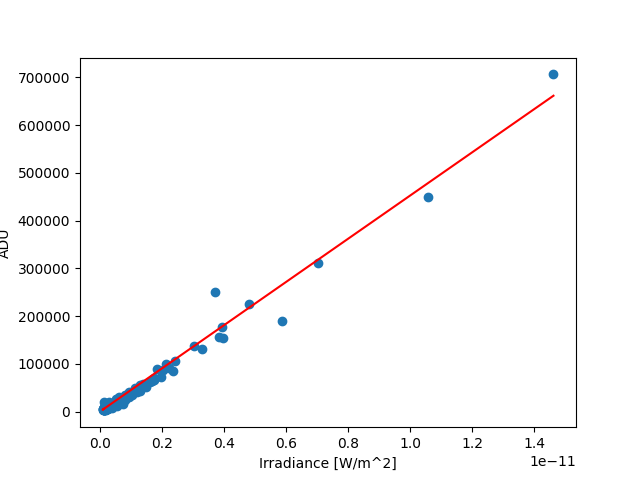
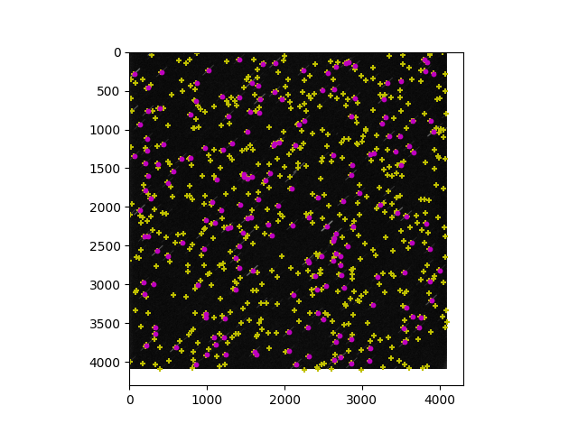
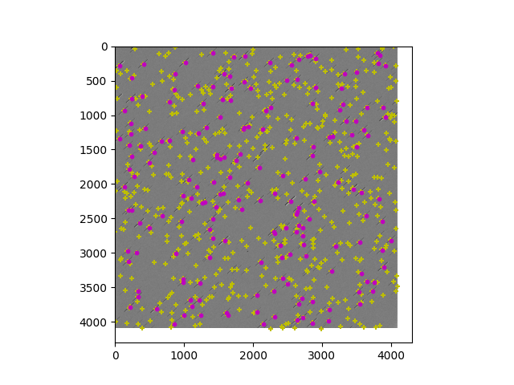
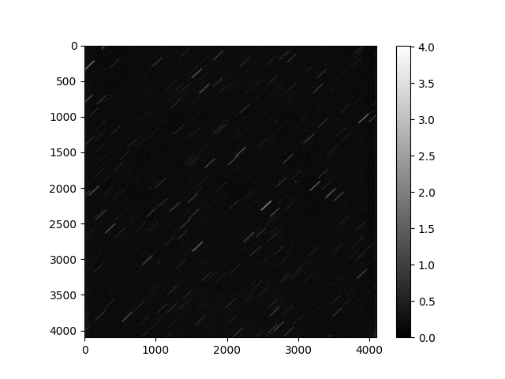
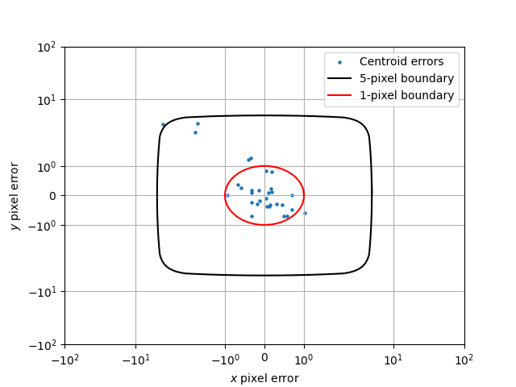
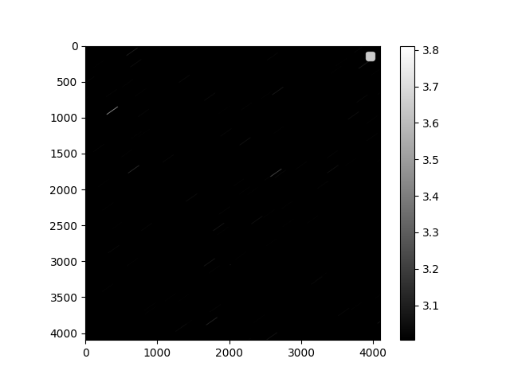
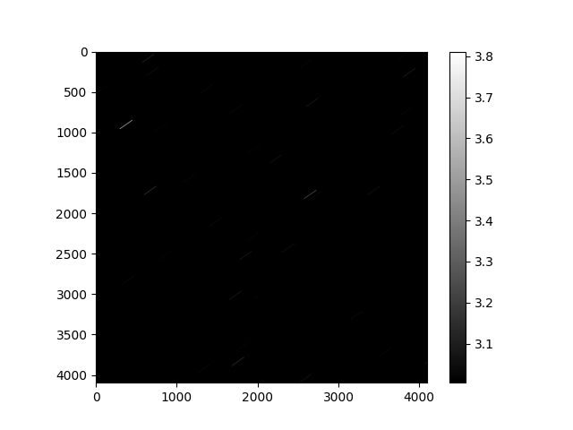

Note
Go to the end to download the full example code
Star Matching#
Given star centroid locations and an initial estimate of the look direction and tracking rate, fit the catalog
import datetime
import os
import matplotlib.pyplot as plt
import numpy as np
from scipy.spatial import KDTree
import mirage as mr
def update_refraction(
look_dir_eci: np.ndarray,
up_dir_eci: np.ndarray,
date: datetime.datetime,
p_mbar: float,
t_k: float,
) -> np.ndarray:
_, el_true = station.eci_to_az_el(date, look_dir_eci)
el_app = mr.apparent_refacted_elevation(p_mbar, t_k, el_true)
print(f"Applying {np.rad2deg(el_app - el_true):.2e} deg of refraction")
dcm_tele = np.vstack((np.cross(up_dir_eci, look_dir_eci), up_dir_eci, look_dir_eci))
dcm_true_to_app = mr.rv_to_dcm(dcm_tele[0, :] * (el_true - el_app)).T
dcm_tele_app = dcm_true_to_app @ dcm_tele
look_dir_eci_app = dcm_tele_app[2, :]
up_dir_eci_app = dcm_tele_app[1, :]
return look_dir_eci_app, up_dir_eci_app
def expected_star_centroids_in_fits(
station: mr.Station,
catalog: mr.StarCatalog,
look_dir_eci: np.ndarray,
up_dir_eci: np.ndarray,
limiting_magnitude: float = 15.0,
add_distortion: bool = True,
) -> np.ndarray:
uvs_in_frame, vm_in_frame = catalog.in_fov(
look_dir_eci, up_dir_eci, limiting_magnitude=limiting_magnitude
)
star_xs, star_ys = station.telescope.j2000_unit_vectors_to_pixels(
look_dir_eci, up_dir_eci, uvs_in_frame, add_distortion=add_distortion
)
return np.vstack((star_xs.flatten(), star_ys.flatten(), vm_in_frame.flatten())).T
info_path = "/Users/liamrobinson/Library/CloudStorage/OneDrive-purdue.edu/2022-09-18_GPS_PRN14/ObservationData.mat"
img_ind = 200
add_distortion = True
add_aberration = False
add_refraction = True
limiting_magnitude = 11.0
station = mr.Station()
data_mat = mr.load_obs_data(station, info_path, img_ind)
date_mid = data_mat["date_mid"]
mr.tic("Loading star catalog")
catalog = mr.StarCatalog("gaia", station, date_mid, add_aberration)
mr.toc()
look_dir_eci = data_mat["look_dir_eci_processed"]
up_dir_eci = data_mat["up_dir_eci_processed"]
p_mbar = data_mat["pressure_pa"] / 100
t_k = data_mat["temp_k"]
if add_refraction:
look_dir_eci, up_dir_eci = update_refraction(
look_dir_eci, up_dir_eci, date_mid, p_mbar, t_k
)
fits_path = os.path.join(os.path.split(info_path)[0], data_mat["fits_file"])
fits_info = mr.info_from_fits(fits_path)
sms_names = data_mat["_obs_mat"]["saveMatchedStars"][0][img_ind].dtype.names
sms = dict(zip(sms_names, data_mat["_obs_mat"]["saveMatchedStars"][0][img_ind]))
sms = {k: np.squeeze(v) for k, v in sms.items()}
print(sms.keys())
ex = sms["endpoints_x"].T
ey = sms["endpoints_y"].T
x = ex[:, 1] - ex[:, 0]
y = ey[:, 1] - ey[:, 0]
m = np.polyfit(x, y, deg=1)
x2 = np.linspace(x.min(), x.max())
print(m)
# angle of m in the plane
print(mr.atan2d(m[0], 1.0))
plt.figure()
plt.scatter(x, y)
plt.plot(x2, np.polyval(m, x2))
stars_found = np.vstack((4096 - sms["x0"], 4096 - sms["y0"], sms["Gmag"])).T
matched_gmag = catalog._mags[sms["idx_catMatched"] - 1]
matched_irrad = mr.apparent_magnitude_to_irradiance(matched_gmag)
matched_brightness = sms["brightness"]
coefs = np.polyfit(np.log10(matched_irrad), np.log10(matched_brightness), 1)
fit_adu_of_irrad = lambda irrad: 10 ** np.polyval(coefs, np.log10(irrad))
sint = lambda irrad: fit_adu_of_irrad(irrad) / fits_info["integration_time"] / irrad
sint_synth = mr.sint(station, np.pi / 2 - data_mat["el_rad_true"])
plt.figure()
plt.scatter(matched_irrad, matched_brightness)
plt.plot(matched_irrad, fit_adu_of_irrad(matched_irrad), c="r", markersize=7)
plt.xlabel("Irradiance [W/m^2]")
plt.ylabel("ADU")
plt.grid()
plt.xscale("log")
plt.yscale("log")
plt.legend(["Data", "Best linear fit"])
img = fits_info["ccd_adu"]
img = np.fliplr(np.flipud(img))
stars_expected = expected_star_centroids_in_fits(
station,
catalog,
look_dir_eci,
up_dir_eci,
limiting_magnitude=limiting_magnitude,
add_distortion=add_distortion,
)
- 
- 
Loading star catalog: 1.98e+00 seconds
Applying 1.14e-02 deg of refraction
dict_keys(['TYC1', 'TYC2', 'TYC3', 'Gaia_ID', 'Gmag', 'Vmag', 'catalog_ra_ICRS_J2016', 'catalog_dec_ICRS_J2016', 'catalog_ra_GCRS', 'catalog_dec_GCRS', 'catalog_ra_apparent', 'catalog_dec_apparent', 'catalog_imgFrame', 'catalog_x0', 'catalog_y0', 'observed_ra_apparent', 'observed_dec_apparent', 'observed_az_apparent', 'observed_el_apparent', 'observed_ra_true', 'observed_dec_true', 'observed_az_true', 'observed_el_true', 'x0', 'y0', 'phi', 'Length', 'endpoints_x', 'endpoints_y', 'brightness', 'JD', 'SNR', 'idx_body', 'idx_ref', 'idx_catMatched', 'angle_errors_arcsec'])
[-0.70784829 -0.47235506]
-35.29270334033877
We’re close, but we need to solve for the slight rotation and translation between the two images
# building a tree for the expected stars
tree = KDTree(stars_found[:, :2])
# finding the nearest neighbor for each found star
expected_to_found_dist, nearest = tree.query(stars_expected[:, :2])
nearest_found_centroid = stars_found[nearest, :2]
nearest_expected_uvs = station.telescope.pixels_to_j2000_unit_vectors(
look_dir_eci,
up_dir_eci,
stars_expected[:, :2],
input_is_distorted=add_distortion,
)
stars_found_uvs = station.telescope.pixels_to_j2000_unit_vectors(
look_dir_eci,
up_dir_eci,
nearest_found_centroid,
input_is_distorted=add_distortion,
)
centroid_err = stars_expected[:, :2] - nearest_found_centroid
np.savetxt(os.path.join(os.environ['SRCDIR'], '..', 'testfitdata.txt'), centroid_err)
_, use_inds = mr.fit_2d_gaussian(centroid_err, return_used_inds=True, mahal_dist_tol=3.0)
print(f"Performing the QUEST fit with {use_inds.sum()} stars")
plt.figure()
median_err = np.median(centroid_err, axis=0)
plt.scatter(
centroid_err[:, 0], centroid_err[:, 1], s=7, c=plt.get_cmap("Set1")(use_inds), alpha=0.6
)
plt.scatter(
median_err[0],
median_err[1],
marker="+",
s=30,
linewidths=3,
color="g",
zorder=10,
)
plt.grid()
plt.xlabel("$x$ error")
plt.ylabel("$y$ error")
plt.legend(["Centroid errors", "Cluster centroids"])
# plt.show()
# endd
q_davenport = mr.davenport(
nearest_expected_uvs[use_inds, :], stars_found_uvs[use_inds, :]
)
print(
f"Applying a {np.rad2deg(mr.wrap_to_pi(mr.vecnorm(mr.quat_to_rv(q_davenport)))).squeeze():.2f} degree rotation to the telescope orientation"
)
A_davenport = mr.quat_to_dcm(q_davenport)
look_dir_true = A_davenport @ look_dir_eci
up_dir_true = A_davenport @ up_dir_eci
cross_dir = np.cross(look_dir_true, up_dir_true)
erc = expected_star_centroids_in_fits(
station,
catalog,
look_dir_true,
up_dir_true,
limiting_magnitude=limiting_magnitude,
add_distortion=add_distortion,
)
dists, nearest = tree.query(erc[:, :2])
err_updated = erc[:, :2] - stars_found[nearest, :2]
print(f"Median error: {np.median(dists):.2f} pixels")
# img_prepared = mr.prepare_fits_for_plotting(img, background_method="parabola")
# img -= int(1e3)
img_prepared = np.log10(img)
plt.figure()
plt.imshow(img_prepared, cmap="gray")
plt.scatter(stars_found[:, 0], stars_found[:, 1], c="m", marker="o", s=20)
plt.scatter(
erc[:, 0],
erc[:, 1],
c="lime",
marker="+",
s=30,
)
plt.xlim(2700, 2934)
plt.ylim(900, 1090)
plt.legend(["Observed centroids", "Synthetic centroids"])
plt.title("Centroids over Observed Image")
plt.figure()
plt.scatter(err_updated[:, 0], err_updated[:, 1], s=5)
plt.yscale("symlog")
plt.xscale("symlog")
t = np.linspace(0, 2 * np.pi + 0.1, 1000)
plt.plot(5 * np.cos(t), 5 * np.sin(t), c="k")
plt.plot(1 * np.cos(t), 1 * np.sin(t), c="r")
plt.legend(
["Centroid errors", "5-pixel boundary", "1-pixel boundary"], loc="upper right"
)
plt.ylim(-100, 100)
plt.xlim(-100, 100)
plt.xlabel("$x$ pixel error")
plt.ylabel("$y$ pixel error")
plt.grid()
- 
- 
- 
Performing the QUEST fit with 23 stars
Applying a -0.02 degree rotation to the telescope orientation
Median error: 0.73 pixels
Generating the synthetic image
station.telescope.fwhm = 3.0
mr.tic("Synthesizing CCD Image")
img_sym = station.telescope.ccd.generate_ccd_image(
date_mid,
fits_info["integration_time"],
station,
look_dir_true,
[fits_info["ra_rate"], fits_info["dec_rate"]],
1e4,
catalog,
up_dir_eci=up_dir_true,
limiting_magnitude=limiting_magnitude,
add_distortion=add_distortion,
sint_val=sint,
noise=False,
)
mr.toc()
# img_sym_prepared = mr.prepare_fits_for_plotting(img_sym, background_method="naive")
img_sym += int(1e3)
img_sym_prepared = np.log10(img_sym)
[13.1253542]
Objects in frame 1:
NAVSTAR 80 (USA 309)
Synthesizing CCD Image: 1.83e+00 seconds
Overlaying the two images
plt.figure()
plt.imshow(img_prepared, cmap="gray")
plt.imshow(img_sym_prepared, cmap="gray_r", alpha=0.5)
plt.scatter(
erc[:, 0],
erc[:, 1],
c="y",
marker="+",
s=20,
)
plt.scatter(stars_found[:, 0], stars_found[:, 1], c="m", marker="o", s=10)
clim_obs = [np.max(img_prepared), np.min(img_prepared)]
print(clim_obs)
clim_sym = [np.max(img_sym_prepared), np.min(img_sym_prepared)]
print(clim_sym)
plt.figure()
plt.imshow(img_prepared, cmap="gray")
plt.colorbar()
plt.clim(np.min(img_sym_prepared), np.max(img_sym_prepared))
plt.figure()
plt.imshow(img_sym_prepared, cmap="gray")
plt.colorbar()
- 
- 
[4.06277, 2.9845273]
[3.8113895060868654, 3.00475066626887]
<matplotlib.colorbar.Colorbar object at 0x3a5adbf10>
Subtracting the two images
adu_err = img_sym.astype(np.int64) - img.astype(np.int64)
adu_err_stdev = np.abs(adu_err) / np.sqrt(np.abs(img.astype(np.int64)))
plt.figure()
plt.imshow(adu_err_stdev, cmap="plasma")
plt.clim(0, 6)
plt.colorbar()
plt.xlim(2700, 2934)
plt.ylim(900, 1090)
plt.show()
Saving the images to file
# import imageio
# from PIL import Image
# img_prepared = img_prepared / np.max(img_prepared) * 255
# img_sym_prepared = (
# img_sym_prepared
# / np.max(img_sym_prepared)
# * 255
# )
# imageio.imwrite("observed_log_adu.png", Image.fromarray(img_prepared).convert("L"))
# imageio.imwrite(
# "synthetic_log_adu.png",
# Image.fromarray(img_sym_prepared).convert("L"),
# )
Total running time of the script: (0 minutes 15.957 seconds)